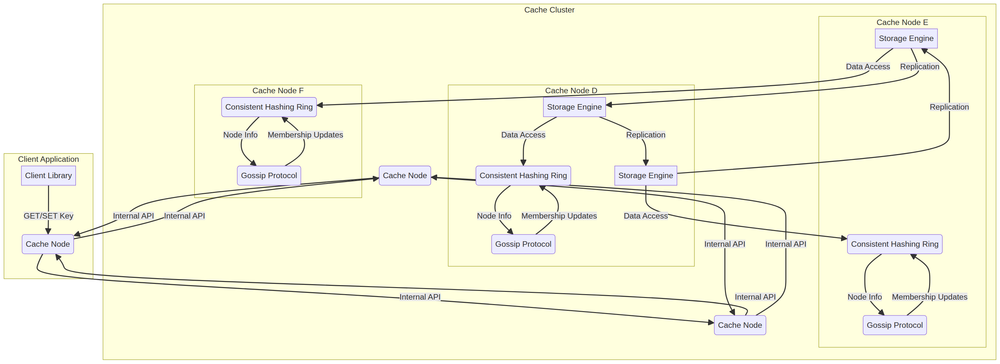
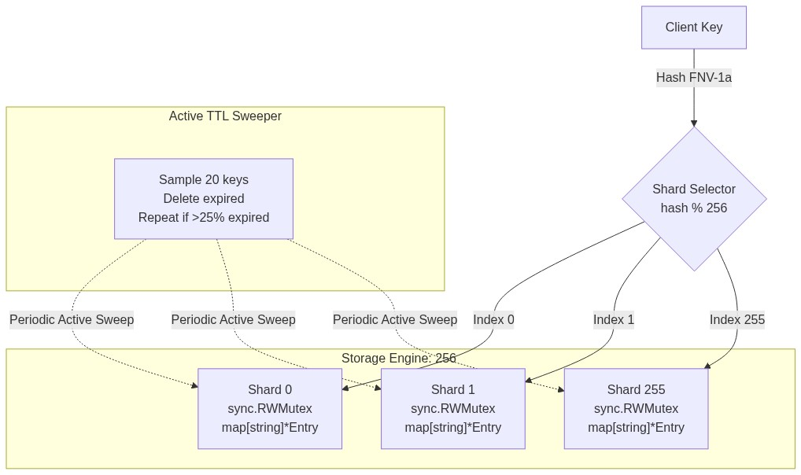
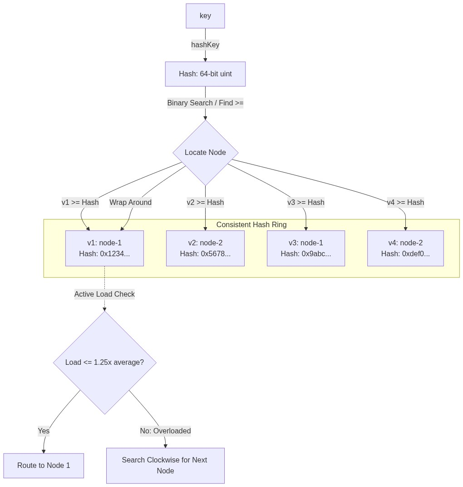
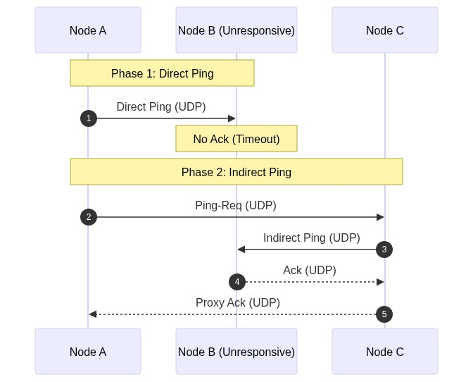
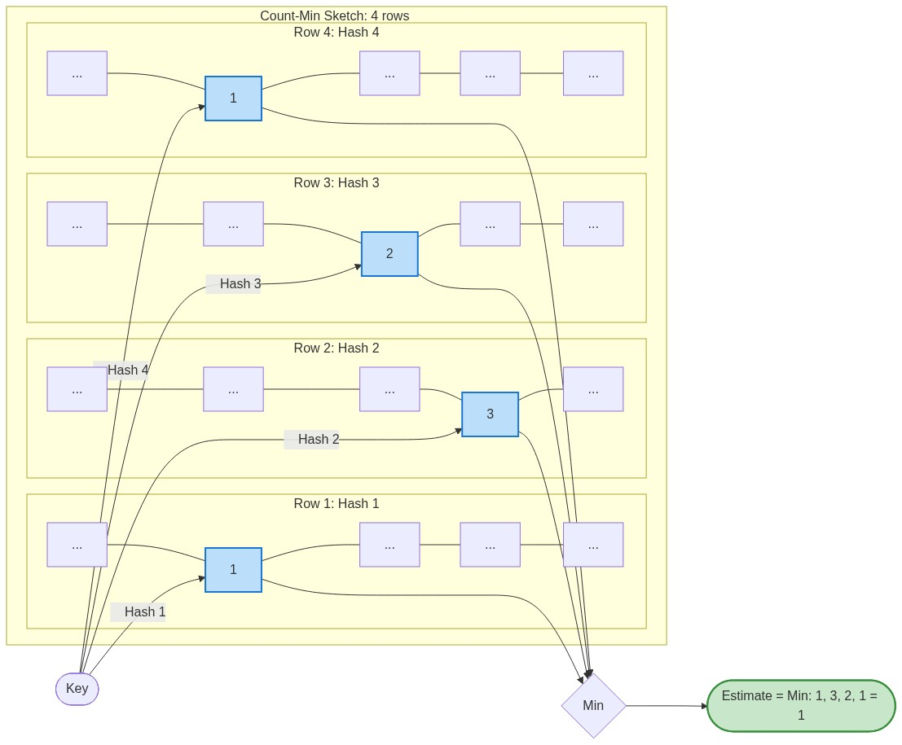
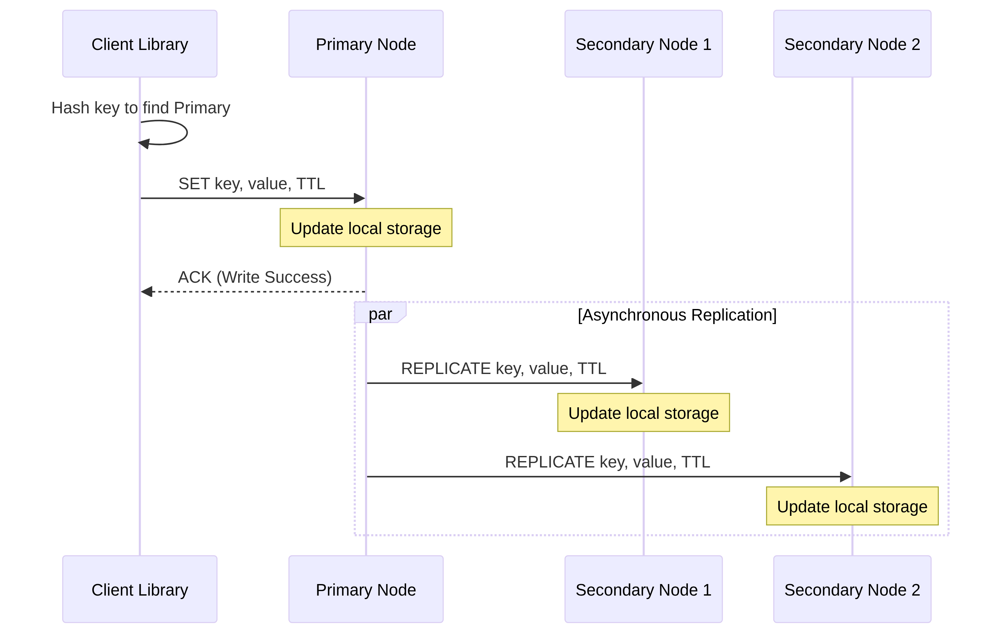
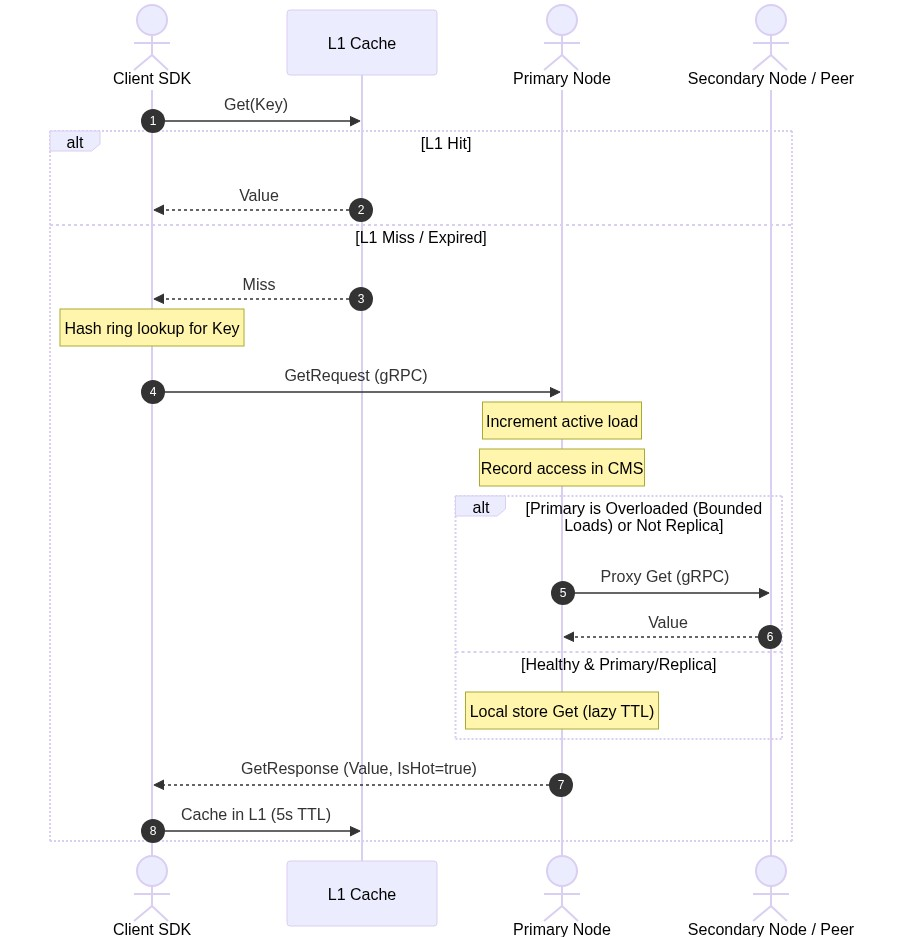
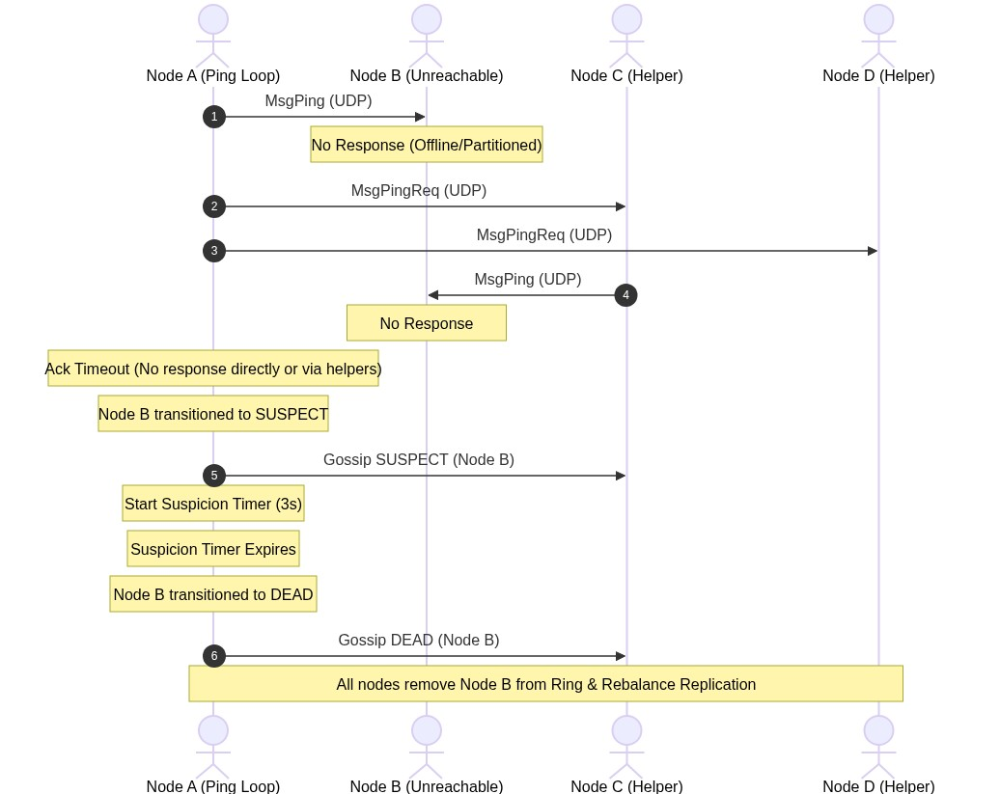

Underlying Architecture & Core Concepts
Decentralized protocols and diagrams powering the cache
Overall Cluster Topology
This project is structured as a collection of independent, peer-to-peer cache nodes that self-organize into a cluster. The architecture ensures there is no single point of failure (SPOF) and no centralized coordination bottleneck.

Figure 1: High-level peer-to-peer topology showing Client Routing, gRPC operations, and Gossip synchronization channels.
1. The Storage Engine & TTL Sweeper

Figure 2: Lock sharding structure mapping keys to individual RWMutex storage buckets.
Internal Sharding
To prevent Global Lock Contention, the store partitions the keyspace into 256 distinct shards:
- Hashing: A key's target shard is computed using the FNV-1a hash algorithm:
Shard Index = fnv1a(key) % 256. - Concurrency: Each shard contains its own
sync.RWMutexprotecting its underlying map. This design permits concurrent read/write access across different shards, ensuring high-throughput under parallel client requests.
Hybrid TTL Expiration
Stale memory reclamation is performed via a hybrid lazy-and-active scheme:
- Lazy Expiration (On-Demand): When a
Getoperation targets a key, the store checks the expiry. If the timestamp is in the past, the entry is deleted immediately, and a cache-miss is returned. - Active Expiration (Background): A background sweeper thread runs periodically (every 100ms by default) cycling through one shard at a time:
- It randomly samples 20 keys from the active shard.
- It deletes any keys that are expired.
- If more than 25% (5 keys) of the sampled set are found to be expired, the sweeper immediately repeats the process on the same shard without waiting for the next tick, rapidly reclaiming memory during bulk expiry events.
2. Consistent Hashing with Bounded Loads

Figure 3: Virtual node assignment clockwise on the consistent hashing ring.
Virtual Nodes (VNodes)
To prevent statistical imbalance (skewed load on specific nodes), each physical node is mapped to 150 virtual nodes (VNodes) distributed randomly on the ring:
The ring is implemented as a sorted slice of VNodes. Binary search ($O(\log(\text{nodes} \times 150))$) resolves key lookups by locating the first VNode hash greater than or equal to the key's hash.
Google's Bounded Loads Algorithm
Standard consistent hashing can lead to hot-spotting if a single key or hash range receives sudden high volume. This system implements Bounded Loads:
- Metric: Each physical node tracks its active concurrent requests via an atomic counter.
- Load Limit: The ring computes the average load of all active nodes. A node is considered overloaded if:
Node Load > (1 + ε) * Average Load(default $\epsilon = 0.25$, capping max load at 125% of the cluster average). - Redirection: During lookup, if the primary target node is overloaded, the lookup algorithm moves clockwise on the ring, testing subsequent VNodes until it locates a node with load within the permitted limit.
3. The SWIM Gossip Protocol & Cluster Membership

Figure 4: Direct and indirect UDP ping flow.
Failure Detection Cycle
Every node runs a periodic failure detection loop (default 500ms):
- Direct Probe: The node sends a
MsgPingUDP packet containing its current incarnation counter to a randomly selected peer. - Indirect Probe (Ping-Req): If the target node does not return a
MsgAckwithin a specified timeout (default 200ms):- The node selects $K$ random helper nodes (default `3`) and transmits a
MsgPingReqpacket. - These helpers attempt to ping the target node directly on behalf of the originating node.
- If any helper successfully receives an Ack from the target, it relays the Ack back to the initiator.
- The node selects $K$ random helper nodes (default `3`) and transmits a
- Suspicion State: If both direct and indirect probes fail, the initiator transitions the target node's state to
SUSPECTin the registry and starts a suspicion timer (default 3 seconds). - Dead Declaration: If the suspected node does not refute the suspicion before the suspicion timer expires, it is marked as
DEADand removed from the consistent hash ring.
Gossip Dissemination & Refutation
- Piggybacking: Membership updates (
JOIN,ALIVE,SUSPECT,DEAD,LEFT) are queued and appended (up to 10 updates) to outgoingMsgPingandMsgAckUDP packets, spreading infection-style across the cluster. - Incarnation Counter: Used to refute false-positive failure detections. If a node receives a gossip update stating that it is
SUSPECT, it increments its own incarnation counter and broadcasts anALIVEupdate, overriding the stale failure reports.
4. Replication, Failover & Key Synchronization
Asynchronous Replication Write Path
- The client looks up the key's primary node on the hash ring and sends a
Setrequest. - The primary node writes the key-value pair to its local sharded storage.
- The primary node increments its atomic sequence counter and spawns concurrent goroutines to propagate a
ReplicategRPC request containing the payload, sequence ID, and TTL to the $N-1$ secondary nodes in the key's replica set. - The primary returns success to the client immediately without blocking on secondary confirmations (ensuring ultra-low write latency).
Failover & Streaming Re-Replication
- Primary Promotion: When the SWIM protocol detects that a node is
DEADand removes it, the next live replica in the hash ring automatically assumes the primary role. - Re-Replication Trigger: The newly promoted primary detects that the replication factor has fallen below $N$ for those keys. It scans its local store and asynchronously replicates keys to the new secondary node introduced in the updated hash ring.
- Streaming Key Synchronization: When a node is promoted or joins, it can call a streaming
TransferKeysgRPC RPC on the remaining cluster nodes. The remote nodes iterate through their sharded store and stream matching keys back to the caller over a gRPC stream.
5. Probabilistic Hot Key Detection & Mitigation

Figure 5: Fixed-size multi-hashing layout of the Count-Min Sketch frequency detector.
Count-Min Sketch (CMS) Detector
On every Get request, the server records the key access in a Count-Min Sketch:
- Structure: A 2D array of counters with $d=4$ rows (hash functions) and $w=4096$ columns.
- Update & Query: For a key, it computes 4 independent hashes and increments the corresponding counter. The frequency estimate is the minimum of the 4 counters:
Estimate = min(Table[i][hash_i(key) % 4096]). This guarantees that we never underestimate frequency, with bounded overestimation error. - Decay Loop: A background thread runs every 60 seconds and halves all counters in the sketch, preventing historic hot keys from permanently triggering mitigations.
Mitigation Strategy 1: Key Splitting
If the frequency estimate of a key exceeds the hot key threshold:
- Splitting Activation: The server marks the key as split and creates $S=4$ sharded copies in the local store named
key:shard_0throughkey:shard_3. - Replication: The primary writes the original value across all $S$ shards.
- Routing: On subsequent writes to the hot key, the primary writes to all $S$ shards. On reads, the client SDK hashes its own client ID to route requests to a specific shard:
Target Key = key + ":shard-i" + (hash(ClientID) % S). This splits the read load across different shards.
Mitigation Strategy 2: Client L1 LRU Cache
When a node processes a Get request and estimates that a key is hot, it sets IsHot = true in the GetResponse. Upon receiving this, the Client SDK caches the key-value pair locally in its L1 cache. Subsequent reads from the client intercept at the L1 layer, bypassing the network hop entirely.
6. End-to-End Communication Flows
Write (SET) Operation Flow

Figure 6a: Client SET replica-propagation sequence.
Sequence Steps:
- L1 Invalidation: The Client SDK checks if the key exists in its local L1 cache. If present, it deletes the entry to prevent stale reads.
- Ring Lookup: The Client SDK queries its local consistent hash ring to find the primary node responsible for the key.
- RPC Execution: The Client sends a
SetRequestto the primary node via gRPC, utilizing a custom JSON codec. - Primary Validation & Split Check: The primary node receives the write. If the key is currently mitigated via Key Splitting, the primary writes the value to the original key and all $S$ split shards. Otherwise, it writes only to the original key in the local sharded map.
- Async Replication: The primary returns a successful
SetResponseto the client. Simultaneously, it triggers async goroutines to call theReplicateRPC on the secondary replicas, propagating the data.
Read (GET) Operation Flow

Figure 6b: Client GET routing sequence (L1 check, local lookup, proxy routing).
Sequence Steps:
- L1 Check: The client checks its L1 LRU Cache. On a hit, the value is returned immediately.
- Ring Lookup: On a miss, the client queries the hash ring to locate the primary node.
- Overload Check: The gRPC server increments the active request counter. If the target node is overloaded, it delegates the request to the next node in the ring. If the node is not in the replica set for the key, it proxies the request to the correct node.
- CMS Increment: The server updates the Count-Min Sketch, estimating the key's frequency.
- Local Read: The server performs a read on the local sharded map (lazy checking the TTL).
- Mitigation Check: If the estimated frequency exceeds the threshold and mitigation is not active, the server triggers Key Splitting. If already split, the server reads the value from the shard corresponding to the hashed client ID.
- Response & Promotion: The server returns the payload to the client. If the key is hot, it includes
IsHot = true. The client SDK then stores the value in its L1 cache.
SWIM Failure Detection & Self-Healing Flow

Figure 6c: Gossip state transition sequence (Alive, Suspect, Dead).
Sequence Steps:
- UDP Ping: Node A selects Node B and sends a
MsgPing. Node B is dead or partitioned and does not reply. - Ping-Req Routing: Node A sends
MsgPingReqto Node C and Node D, asking them to probe Node B. - Indirect Probing: Node C and Node D send UDP pings to Node B. Neither receives an answer.
- Suspicion Entry: Having received no Acks within the timeout, Node A marks Node B as
SUSPECT, starts a 3-second timer, and gossips the suspicion to the cluster. - Dead Confirmation: The suspicion timer expires without refutation. Node A marks Node B as
DEADand gossips the state change. - Ring Sync: All nodes receive the
DEADgossip, remove Node B from their hash rings, and trigger the replication manager's failover handler. - Failover Execution: The replication manager identifies keys for which it is the new primary. It runs
ReplicateWriteto sync these keys to the new secondary replicas.